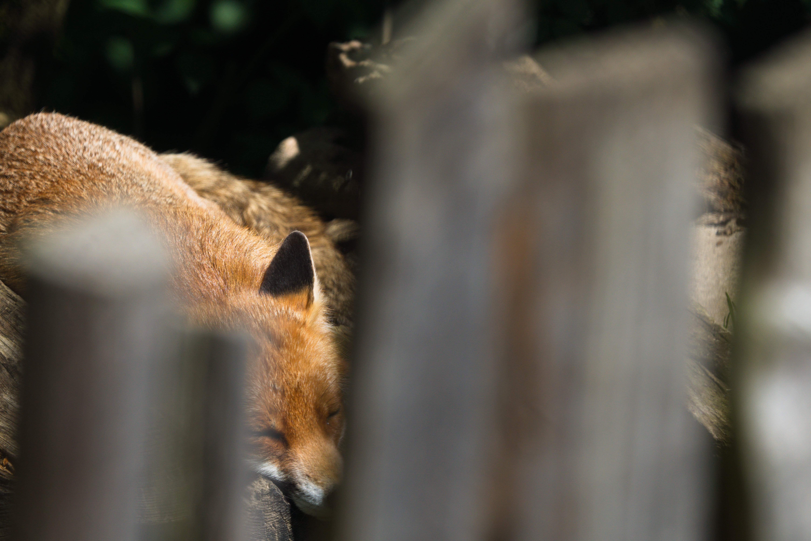

Bilderecke
Tier und Landschaftsfotografie
Über mich
Ich bin leidenschaftlicher Hobbyfotograf und liebe es, besondere Momente mit der Kamera festzuhalten. Ob Natur, Landschaften, Tiere oder einfach den Alltag. Ich finde überall Motive, die eine Geschichte erzählen.
Tierfotografie


Landschaftsfotografie


Anmeldung für einen Fotokurs
Du hast Interesse an der Tier oder Landschaftsfotografie? Bei mir bist du genau richtig. Melde dich unter folgendem Formular bei mir!